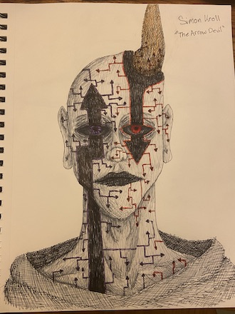

My name is Jacob Bofinger.
I am 19 in my sophomore year at Seton Hill University majoring in graphic design with an animation focus. I am from Allison Park, Pennsylvania. I make art traditionally with markers and colored pencils, but have been learning digital art with Procreate, Adobe Illustrator, Adobe Indesign, and Adobe Photoshop.
Featured Works

This is a drawing I did in my freetime of a charcater named Cyemon Kroll. He is an arrow devil which is why he has a bunch of purple and red arrows on his body. I really liked how I colored his skin with my grey. I feel it worked well and makes him pop. I mainly used different colored pens to cross hatach and hatch many times to complete him.
This is a piece I completed for my figure drawing class in my freshman year of college. The prompt was to make a scene that implied movment. This is another character of mine who was experiement on. His name is Mr. Smiley and he is escpaing his sector.